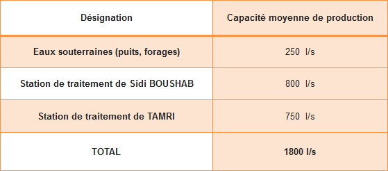

Espace Technique
Eau Potable
Système d’alimentation
Les installations de production d’eau potable destinées à l’AEP du Grand Agadir appartiennent toutes à l'ONEE/Branche Eau qui en assure la gestion. Les ressources en eau utilisées se composent de captages souterrains et des eaux superficielles.
Les captages souterrains sont composés de puits et forages situés au Sud, au Sud-Est et à l’Est de la ville d’Agadir. Il s’agit du champ captant de la forêt d’Admine, du champ captant Est, du champ captant Sud et du champ captant Ahmar Boudhar.
En 2009, et pour des raisons de détérioration de la qualité de ses eaux, l’ONEE/Branche Eau a abandonné l’exploitation des forages du Golf dont la capacité est d’environ 100 l/s et en 2012 l’exploitation de certains forages du champ captant du sud dont la capacité est d’environ 70 l/s.
Ainsi, la capacité moyenne de production des captages souterrains existants s’est réduite à environ 250 l/s.
Outre les eaux souterraines, le Grand Agadir est desservi en eau à partir de la station de traitement de Sidi Boushab alimentée en eaux brutes provenant du barrage Abdelmoumen.
La capacité de production de la station de traitement qui était initialement de 300 l/s a été portée en 1996 à 600 l/s et à 900 l/s en 2015, de manière à procéder à une modulation des prélèvements pour couvrir les périodes de pointe, sans toutefois dépasser la dotation allouée à l’AEP d’Agadir à partir du barrage Abdelmoumen.
Une seconde station de traitement (Tamri) sur barrage Moulay Abdellah a été mise en service à partir de 2007 avec une capacité de production maximale de l’ordre de 750 l/s
Ainsi, la capacité maximale actuelle de production en tenant compte de l’état actuel des ressources disponibles est de 1800 l/s
© RAMSA
Realisation 2019